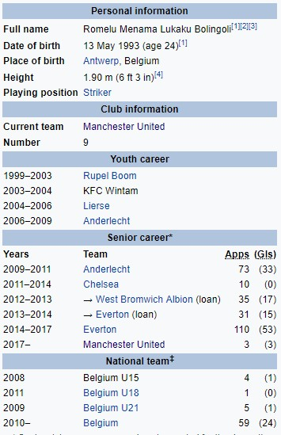

Ромелу Лукаку
Ромелу Менама Лукаку Болинголи (рођен 13. маја 1993. године) је белгијски професионални фудбалер који игра као нападач за клуб Манчестер Јунајтед и Белгијску репрезентацију. Он је један од само пет играча који је постигао 50 голова у Премијер лиги пре свог 23. рођендана, и четвртог играча (и првог странца) који је постигао 80 пре 24. рођендана. Лукаку је започео своју каријеру са локалном екипом Рупелом Бомом, пре него што је прешао у Лир, где је 2006. добио зараду Андерлехту из Белгијске Про лиге. Лукаку је професионално дебитовао док је и даље био у школи са 16 година и постао најбољи стрелац 2009-10 у Белгији као Андерлехт освојио је белгијско првенство. У пролеће лета 2011, Лукаку се придружио клубу Челси. Није се појављивао редовно у својој првој сезони, а потом две наредне сезоне провео на зајмовима у Вест Бромвич Албиону и Евертону, трајно потписујући за други клубски рекорд од 28 милиона фунти 2014. године. Три године касније, Лукаку је потписао за Манчестер Јунајтед. Лукаку је 2010. године направио свој први међународни деби за Белгију, а од тада је зарадио преко 50 наступа. Такође је представљао земљу на ФИФА Светском првенству 2014 и УЕФА Еуру 2016.
